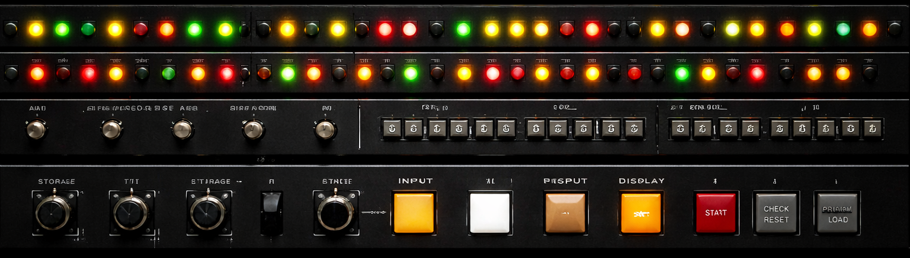

z/OS Storage Simulator — OMEGAMON Style
IBM Mainframe Memory Monitoring Demo
Este simulador educacional demonstra o comportamento do gerenciamento de memória do sistema operacional IBM z/OS, incluindo Real Storage, Auxiliary Storage, paging e áreas comuns como CSA e ECSA.

SYSTEM ACCESS COUNTER
000000
UNIQUE TERMINAL SESSIONS
meine Besucher